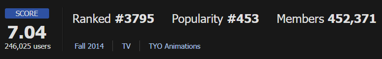
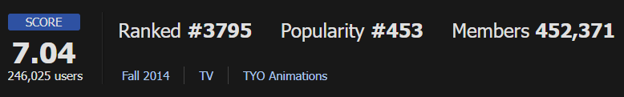

TV만화 2014 - 15세 관람가 (12부작)
 

허영심 많은 여고 1학년생 시노하라 에리카. 친구들에게 남친과의 연애담을 자랑스럽게 떠들지만,
사실은 모태솔로 16년 차다. 남친 인증을 강요하는 친구들 때문에 에리카는 길에서 본 미남을 도촬하여
자기 남친이라고 소개하지만, 공교롭게도 그는 같은 학교에 다니는 사타였다.
사타에게 사정을 밝히고 남자친구인 척하는 것을 허락받았지만, 사실 그는 다정해 보이는
외모와 달리 상상을 초월할 만큼 속이 시커먼 인물이다.
OTT
시리즈온, TVING, Wavve, WATCHA